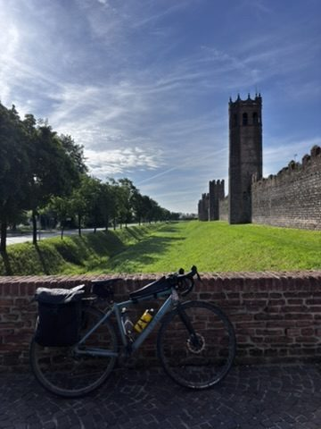

Sports & Adventure
Endless Gravel, a Man With His Dog, and Getting Very Lost Near Venice
Gravel cycling in the Veneto. A detour that became the best part, a very cool man who brought his dog to the race, and cleaning the bike in a river after.
Listen
Read the story →